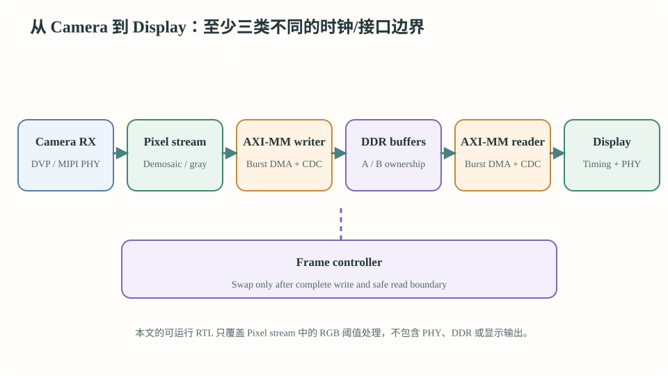
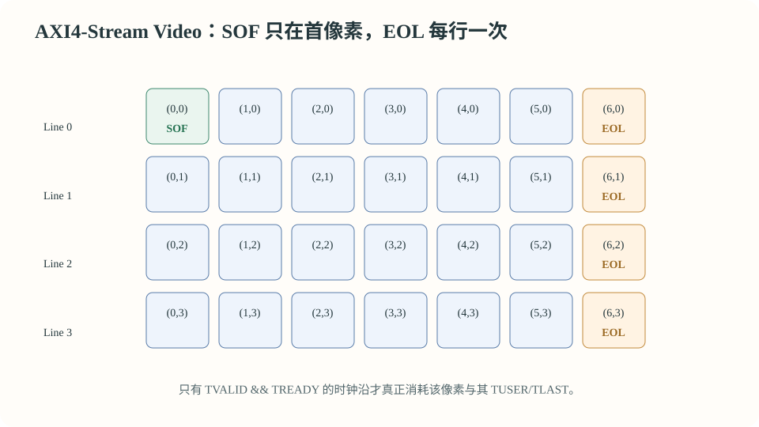
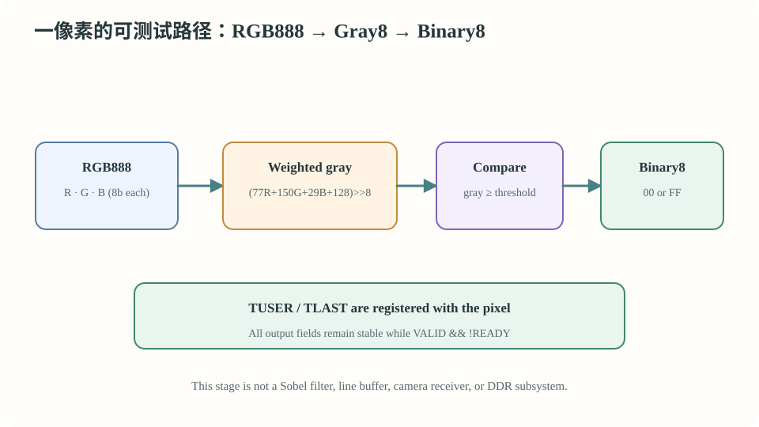
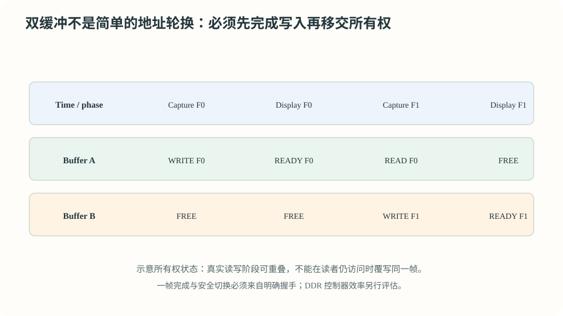
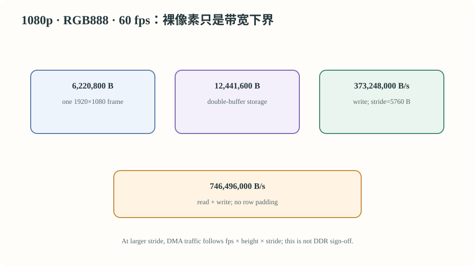

FPGA 图像采集与处理系统：流接口、帧缓存与显示工程
把 Camera、AXI4-Stream Video、像素处理、DDR 双缓冲和显示时序拆成可验证的工程契约，并用可仿真的 RGB 阈值流水线贯通数据与控制标记。
01 / 从摄像头到显示屏，首先是一个多时钟、带宽受限的系统
摄像头输出的是按像素时钟或高速物理层恢复时钟到来的连续图像；显示器则要求严格的像素与同步时序。两端的时钟不一定相同，中间还可能经过不同宽度的像素处理、DDR 总线和处理器配置。要建成可靠系统，必须同时保证像素值正确、行帧边界正确、带宽充足以及存储所有权正确。

例如一个实际系统可能分为：传感器配置 I²C/SCCB、DVP 或 MIPI CSI-2 摄像头接收、RAW Bayer 去马赛克（如果传感器输出 Bayer）、RGB 图像运算、AXI4-Stream Video → AXI4-MM Frame Buffer Write、DDR 双缓冲、Frame Buffer Read、Video Timing Controller、HDMI/VGA/DSI 输出。每一级都需要数据格式、宽高、时钟与错误处理契约。AMD PG278 · System Considerations介绍了 Video In、frame buffer、AXI4-Stream 与显示 timing 的连接场景。
设计范围：仓库中实际提供一个同域、单像素深度的 RGB888→Gray8→Binary8 处理 stage 和可复现的仿真；其他模块会按真实工程需求解释接口、约束与验证计划，但不假称已有 camera PHY、DDR 控制器或显示 bitstream。
02 / 视频流的最重要契约：SOF 与 EOL 是不同事件

AXI4-Stream 的传输发生在同一时钟上升沿的 TVALID && TREADY 同时为 1 时。若接收方拉低 READY，发送方必须维持 VALID，并使 TDATA、TUSER、TLAST 等同一传输的内容保持稳定，直到握手成功；任何内部计数器也只能在真实像素交接成功时前进。有关稳定性见 Arm AMBA AXI Protocol Specification。
AMD AXI4-Stream Video 协议约定：帧第一个像素带 TUSER[0]=1（Start of Frame，SOF），行的最后一个像素带 TLAST=1（End of Line，EOL），前者每帧一次、后者每行一次。详见 AMD PG278 · EOL and SOF。
摄像头 DVP 可能持续发送像素而不支持接收方任意 backpressure，MIPI CSI-2 也有独立的链路/包处理规则；因此不可以仅将 DVP 的 pclk, vsync, href, data 直接接到一个带 READY 的 AXI 输入端就宣称协议兼容。必须定义完整的帧同步、行宽检测、丢帧策略、跨时钟 FIFO 容量，以及在上游不能暂停而下游发生阻塞时如何保护数据完整性。
| 信号 | 意义 | 约束 |
|---|---|---|
| TDATA[23:0] | {R,G,B}；RGB888 | 传输停顿时保持 |
| TVALID | 当前 beat 有效 | 提交握手前不得任意撤销 |
| TREADY | 下游此拍可以接收 | 可能动态拉低 |
| TUSER[0] | 本帧首像素标志 | 随数据一同握手 |
| TLAST | 本行最后像素 | 不是本帧末尾 |
03 / 可运行处理核：RGB888 → 8-bit 灰度 → 二值阈值

为了让实验可以在普通计算机上确定性测试，本章选择不需要邻域窗口的像素操作：gray = (77·R+150·G+29·B+128) >> 8。由于 77+150+29=256，三通道都为 255 时，加上 128 的最大和为 65,408，能够放进 16-bit 无符号整数。用 gray >= threshold 产生 8'hFF，否则 8'h00。
系数 (77,150,29)/256 是一个供数字硬件使用的近似灰度配比，不是色彩管理标准的完整色域和 gamma 校正流程。RGB 的线性/非线性编码以及视频色彩矩阵在工程里必须另行约定；本模块只声明该固定整数映射。
wire [7:0] r=s_tdata[23:16],g=s_tdata[15:8],b=s_tdata[7:0];
wire [15:0] weighted=r*16'd77+g*16'd150+b*16'd29+16'd128;
wire [7:0] gray=weighted[15:8];
assign s_tready=~m_tvalid | m_tready;
always @(posedge clk) begin
if (!rst_n) m_tvalid <= 0;
else if (s_tready) begin
m_tvalid <= s_tvalid;
if (s_tvalid) begin
m_tdata <= gray >= threshold ? 8'hff : 8'h00;
m_tuser <= s_tuser;
m_tlast <= s_tlast;
end
end
end该 RTL 使用输出寄存器作为 one-entry elastic stage：m_tvalid=1 && m_tready=0 时保留数据和 sideband；输出可以被消耗的同拍允许接收新输入。样本与 TUSER/TLAST 的位宽在输入输出不同（RGB888 → Binary8），但是两侧仍各只有一个 pixel/beat。若阈值运行时来自异步 CPU 寄存器，应先完成 CDC 或 frame-boundary 同步更新，不能直接把异步配置总线穿到组合比较器。
04 / 三帧合成图像实验：独立记分牌验证背压与边界
运行 tb_rgb_threshold_stream.v，它发送三帧 7×4 的合成 RGB 图，按固定公式构造每个像素，并在不同周期随机拉低 m_tready。testbench 以纯整数参考算法独立算出预期黑白值、SOF 和 EOL，在输出握手时检查对应 pixel 的顺序与值；还会检查上拍背压时数据与 sideband 是否保持稳定、drain 后是否剩余有效输出。
iverilog -g2012 -Wall -s tb_rgb_threshold_stream \
-o /tmp/video.vvp \
examples/rtl/rgb_threshold_stream.v \
examples/tb/tb_rgb_threshold_stream.v
vvp /tmp/video.vvp
# PASS rgb_threshold_stream (... pixels, ... stalls)该测试能发现常见错误：把 TLAST 当帧末尾、SOF 每行重复、输出堵塞时覆盖数据、只延迟 TDATA 不延迟 TUSER/TLAST、未按握手消费像素、灰度位宽溢出或舍入错误。更高等级的验证还应加入阈值动态配置、复位发生于帧中、视频丢包/超时恢复、随机帧宽高和实际 DMA/DDR 背压。
注意输出状态来自像素同步时钟：这份 RTL 没有直接生成 VGA 的 HSYNC/VSYNC，也没有模拟传感器输入和板级 connector。其“通过”只能证明像素级运算和规定的 ready/valid 协议在所测轨迹上正确。
05 / 需要 Sobel 和图像邻域时，为什么必须加入行缓存
逐像素灰度/阈值的计算只依赖当前 R,G,B；3×3 Sobel 则依赖当前位置左右、上下各一行的数据。一个典型的流式实现需要保存至少前两行，并在当前行用移位寄存器形成三列窗口。若像素宽度是 W 且灰度每像素 8-bit，两条历史行缓存的原始数据下界为约 2×W×8 bit；还需窗口寄存器、边界控制和 FIFO 额外资源。
Sobel 的两个离散卷积核分别沿水平方向和垂直方向估计亮度梯度：
输出可能使用 |Gx|+|Gy| 近似梯度或更昂贵的平方根定义；位宽需要容纳有符号中间值。上下左右边界应约定补零、复制或丢弃，不能在 RTL 中默认一个未说明的边界模式。
若架构同时支持 backpressure，窗口和 x/y 坐标也必须只在有效交接时推进，并确保延迟 N 拍后的 SOF/EOL 仍与其对应像素对齐。后续增加 Sobel 应先在小尺寸图（如 5×4）对照 Python golden，再开展逐列逐行与跨帧验证。本文没有把简单 threshold 电路冒充成 Sobel 实现。
06 / DDR 双缓冲：内存大小与真实带宽是两个不同预算

以 RGB888 1920×1080 为例，一帧裸像素为 1920×1080×3 = 6,220,800 bytes；两帧的未对齐存储总量为 12,441,600 bytes。若存储图像为二值 8-bit 而非 RGB888，则每像素只需 1 byte，但仍取决于像素打包与 stride；绝不能拿处理前的 3-byte 格式预算和处理后的 1-byte 格式混算。

在 60 fps 情况下，活动像素的单向写入量是 373,248,000 B/s。但帧缓存 IP 的实际逐行传输预算还取决于 stride：AMD PG278 给出的带宽关系为 fps × height × stride（每个读或写方向分别计算）。若 RGB888 的有效行宽为 5,760 bytes、实际 stride 对齐到 5,888 bytes，则单向帧缓存传输为 381,542,400 B/s，持续读写合计为 763,084,800 B/s。这仍不是 DDR 控制器峰值签核值；还要考虑 AXI burst、读写切换、refresh、仲裁、FIFO、其他 master 和极端访问模式。参见 AMD PG278 · System Considerations 中的 stride 带宽公式，以及 PG278 · Frame Buffer Overview 的 AXI4-Stream Video / AXI4-MM 架构。
python3 scripts/frame_budget.py --width 1920 --height 1080 \
--bytes-per-pixel 3 --fps 60 --buffers 2 --stride-bytes 5888
# active_line_bytes: 5760
# stride_bytes: 5888
# bytes_per_frame: 6359040
# allocated_bytes: 12718080
# active_pixel_stride_write_bytes_per_second: 373248000
# active_pixel_stride_read_stride_write_bytes_per_second: 746496000
# stride_write_bytes_per_second: 381542400
# stride_read_stride_write_bytes_per_second: 763084800双缓冲安全切换需要至少三个状态条件：frame writer 彻底完成当前帧写入、reader 不再访问将被覆盖的 buffer、以及显示端在安全帧边界切换 base address。仅凭 VSYNC 高电平替换地址无法证明 DDR 中的帧已全部可用。若读者落后而下一帧必须到达，应选择三缓冲或显式丢帧策略，而不是覆盖正在读取的图像。
07 / 输出 VGA/HDMI：像素数据与 blanking 时序不可混合
显示器需要总水平周期、总垂直行数、同步极性、front porch、back porch 和 active video 的一致配置。水平、垂直总周期都包含 active 区域和 blanking 区域；像素时钟由完整总周期与刷新率共同决定：
因此仅用 640×480×60 计算 pixel clock，会漏掉空白区，不是正确的视频时序。
VGA 需要模拟 RGB DAC 或适配电阻网络、HSYNC/VSYNC 和有效信号；HDMI 需要满足 TMDS（或新版本的不同物理层）、编码与时钟/收发器条件。实际端口约束、I/O 电气标准和显示时钟源不能从本章任意猜测。Video Timing Controller 与 Video Out/HDMI IP 的时钟和 CDC 也需要按厂家文档设计，绝不能把任意 25 MHz 算例当作对所有屏幕可用的时钟。
逐像素 stream 的 TUSER/TLAST 不等价于 VGA/HDMI 引脚上的 HSYNC/VSYNC；转换器必须根据 frame/line 标记、宽高和 timing 模式生成 active pixel 与 blanking。验证时先用 test pattern 检查显示输出，再接入实际摄像头和 DDR，逐层排除输入/输出 clock 域之间的违例。
08 / 系统级 Bring-up：逐层收紧故障空间
| 阶段 | 检查点 | 常见失败 |
|---|---|---|
| 时钟/复位 | 外部时钟、PLL lock、reset release、CDC | 完全无图、随机启动 |
| 摄像头 RX | 帧、行、像素计数与颜色格式 | 行错位、色彩异常 |
| 像素处理 | Golden、SOF/EOL、背压 | 第一/最后像素丢失 |
| DDR write/read | buffer 归属、burst、stride、速率 | 撕裂、旧帧、偶发花屏 |
| 显示输出 | HS/VS、active area、PLL、PHY | 黑屏、不同步、偏移 |
| 生产签核 | ILA 观察、CDC、STA、power、board log | 仿真正确但板上不稳定 |
对没有目标开发板的教学环境，先用纯 RTL 视频 testbench 验证 7×4 帧数据，再用 Python 预算模型核对 1080p 带宽；接下来读者可以替换实际的 Video In、AXI Frame Buffer、Video Out IP、选择一块确定的板卡、导入真实 timing/IO 约束，并保留每个阶段的仿真和实现日志。
最重要的工程结论：摄像头到显示链路不是一个单独 RTL 文件。任何一个环节缺失时，都应清楚声明该系统尚未完成；只有将目标 part、板卡原理图、时钟、DDR 物理约束、PHY 配置、RTL/IP 版本和实际测量连接起来，才能给出真实的端到端验收结论。
自测：一帧 1920×1080 RGB888 在 60fps 下，连续读写裸像素数据至少需要多少吞吐？
一帧 1920×1080×3 = 6,220,800 byte，60fps 的单向写入是 373,248,000 B/s；若另一方向同样持续读取，加起来至少搬运 746,496,000 B/s 裸像素数据。DDR 物理带宽预算还必须加上协议、仲裁、刷新、对齐和时序余量。